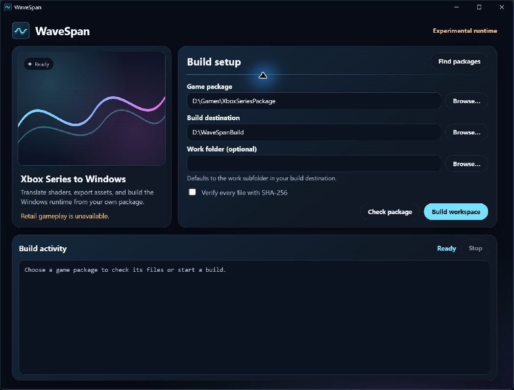

In development
Xbox Series.
On Windows.
WaveSpan is an experimental Windows runtime and shader translation toolkit for the Xbox Series build of GTA VI.
Where WaveSpan stands
The Windows runtime launches the retail executable, and the local decompiler works. Retail startup reached D3D12 descriptor heap initialization. The next milestone is the first rendered retail frame.
Launch and rendering milestones
- Windows runtime (gta6rt.exe)
- Launches retail executable
- Synthetic Vulkan frames
- Verified
- First retail frame
- Awaiting verification
- Gameplay
- Unavailable
Graphics translation
WaveSpan translates RDNA2 shaders to Vulkan SPIR-V. Three recorded runs tracked progress across 26,503 primary shaders.
- Earlier test
1,471 - Later test
2 - Latest shown
0
All 26,503 passed SPIR-V validation in the recorded run. Separate GPU tests check whether translated shaders produce the expected results.
See the recorded testsWhat else works?
- Windows runtime
Stand-in tests cover loader startup, thread-local storage, file I/O, and threads. Xbox platform API coverage is partial.
See the Windows tests- Local decompiler and asset exporter
The build checks the supported package, disassembles precompiled Xbox Series shaders, translates supported shaders to Vulkan SPIR-V, and exports models, textures, and audio. Asset format coverage is partial.
See asset documentation
Build locally
On Windows 10 or 11 x64, open Build.bat to check your own readable copy of GTA VI for Xbox Series, version 1.0.2.1, and build a local workspace. It opens the Windows launcher when installed and falls back to the Python launcher.
